Low cost DIY flaps control/switch panel for Flight Simulator
First created 12 June 2025.
I bought Flight Simulator 2020 and a new xbox series S in late 2023, only to quickly realise that xbox compatible flight yokes were very very expensive. By spring 2024, I bought a MSI RTX 4060 ventus graphics card and new Corsair ATX PSU to use with an old i5-8400 mini tower PC.
I mainly fly GA aircraft such as Cessna 172 with steam gauges.
This blog describes how I added a 4 position flaps control lever and switches on a shoe string budget.
Shown below is an old 3 pole 4 position rotary switch I bought over 30 years ago. You can find them on aliexpress for less than 2 quid.
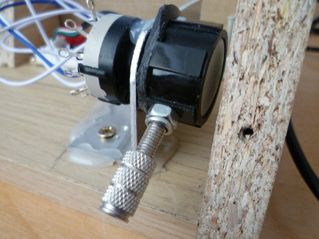
The lever is constructed from an old 35mm outer diameter plastic knob. I cut off the hex head and I drilled a 6mm hole through the side of the plastic knob. The M6 bolt is secured with two M6 lock nuts.
The knurled collar is one end of a F plug. F plugs are available to take either standard RG6 cable, or thinner shotgun cable commonly used in UK for old Sky UK satellite installations. The thread appears to be M6 for the shotgun F plug. Some glue may be required to stop the collar from spinning loose.
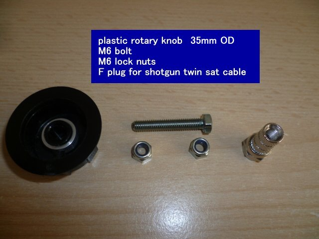
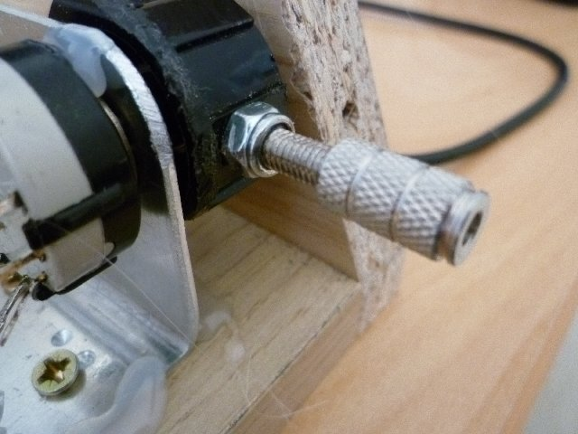
To connect the rotary switch to the Windows PC, I used a zero delay Arcade Controller. It includes a long fly lead (black cable below) with a standard USB-A plug. The controller is normally sold with pre-made leads (blue and white wires below). Note you may need to buy additional leads. I found I had to solder the leads to ALL the switch contacts for reliable operation.
You can use an arduino micro board, but the overall cost will be a bit higher.
Windows will recognise the arcade controller. No drivers required. Use 'joy.cpl' to see listed of connected controllers. It will be listed as 'Generic USB joystick'.
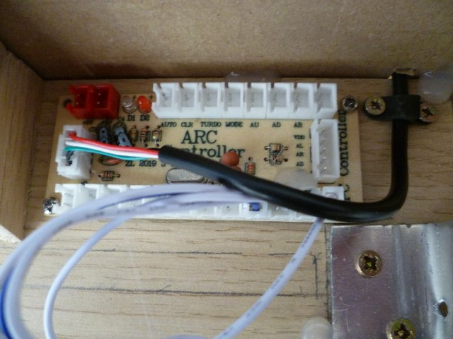
The toggle switches and push buttons are inexpensive from aliexpress.
This was my original prototype.
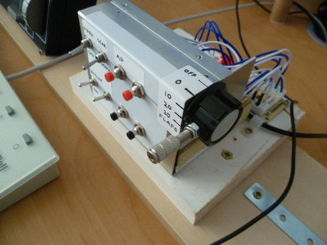
The following images below show the final version in its stages of construction.
Each set of leads comes with a blue and white wire. If memory serves me correctly and studying image below, the blue coloured wire is the 'common' lead. ie. Four white leads go to the rotary switch, and just one blue lead from any of the leads goes to the 'common' connection on the rear of the rotary switch.
The rotary switch is mounted on a piece of folded aluminium and screwed/glued it to some discarded pieces of furniture board.
The 4 push buttons should be wired to the Dpad on the arcade controller.
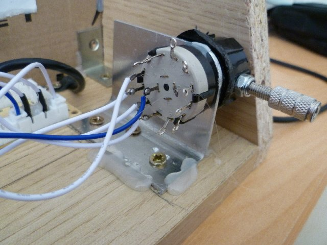
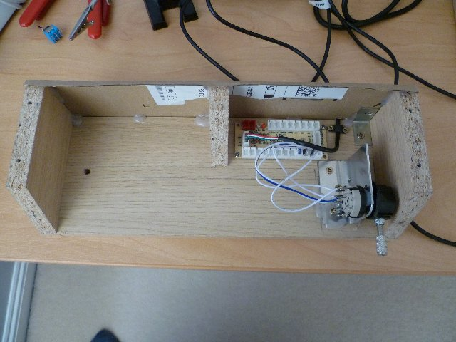
Back panel is cardboard I screwed and glued to the furniture board.
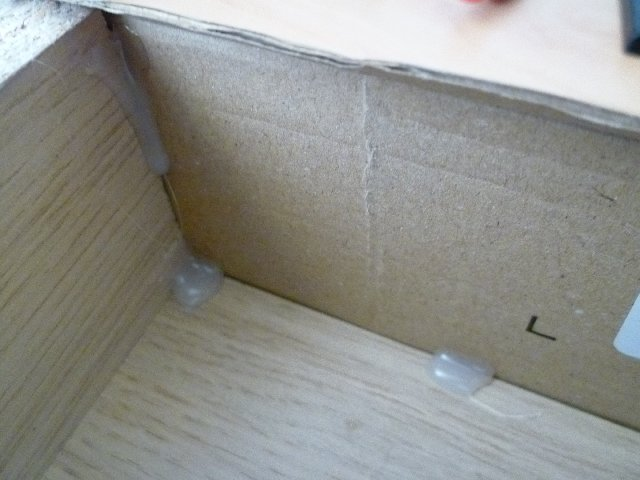
The black textured steel panel is from a discarded PC. I used a hand metal nibbler to cut the sheet to size. I didn't use a dremel or other power tools because it would be messy/dusty. Folding the sheet steel was extremely difficult and the textured paint cracked along the fold. I touched it up with black permanent marker pen. In hindsight, I would not want to fold the sheet steel.
Dremel and cutting discs used to help make the rectangular slot for the flaps control lever.
The labels on the front panel is laser printed and attached with 3M magic tape.
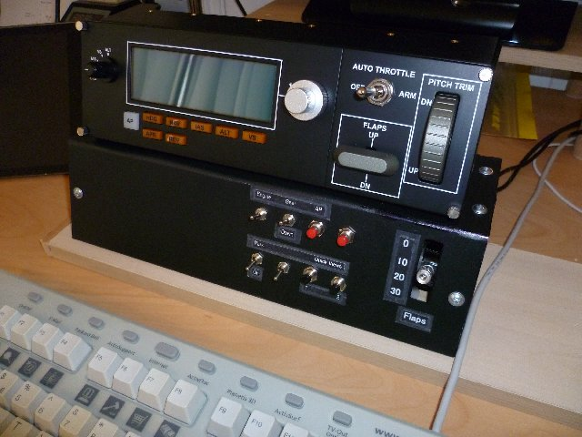
The following images show how it is mounted without drilling any holes into the 'top' of the desk. It overhangs the 1.8m wide desk because I wanted to make best use of the space at the other end of the 1.8m wide desk.
The Flaps ON/OFF switch seen below is used to 'disconnect' the 'common' end (blue wire) of the rotary switch signal coming from the arcade controller. This gives me the option to use the Flaps Up/Down lever on the Logitech Multi panel.
The two folded cut outs in the rear cardboard back panel, is to provide access for the fixings to secure the Logitech multi panel to the top of the DIY switch panel.
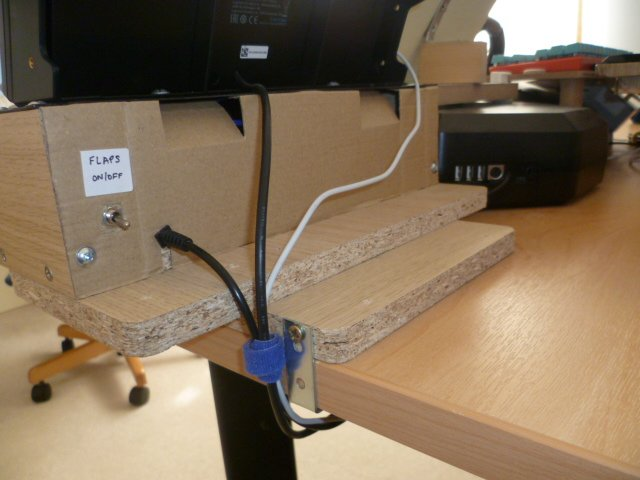
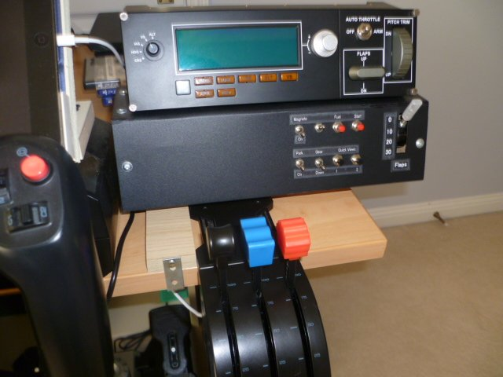
Here is a list of items I purchased from aliexpress:
Zero delay Arcade Game controller. I purchased the 'Wiring 3' kit which I think came with 14 pairs of blue/white connecting leads. Rotary switch requires 4 leads, push buttons requires 1 lead each, and toggle switches required 2 leads. Total 16 required for my setup. I had to improvise when I realised I was 2 leads short of required 16.
https://www.aliexpress.com/item/1005006057907186.html
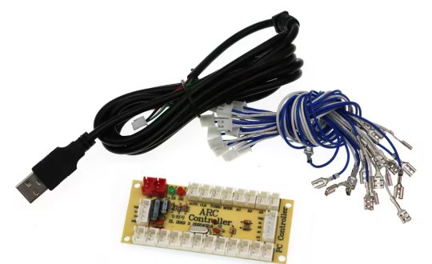
Miniature toggle switches, MTS102 'ON-ON' variety.
https://www.aliexpress.com/item/1005006345449133.html
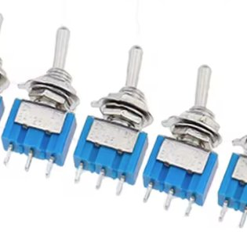
Push switches (make sure to buy NO – 'Normally Open' variety)
https://www.aliexpress.com/item/1005006428007609.html
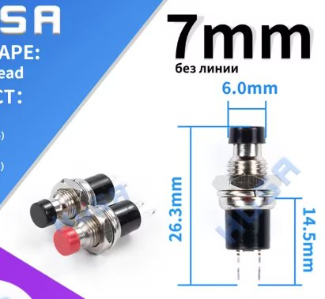
One example of a 3 pole 4 position rotary switch I found on Aliexpress
https://www.aliexpress.com/item/1005008714160278.html
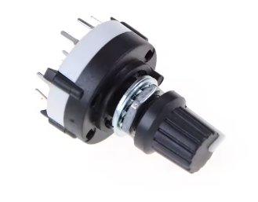
The 33mm diameter potentiometer knob may be suitable
https://www.aliexpress.com/item/1005005788126189.html
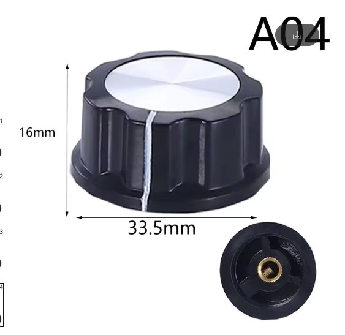
My experience with Aliexpress has been positive since March 2024. In past 15 months, I've made around 30 purchases. Majority of orders were circa £12 including VAT. Provided I choose items which qualify for 'Choice delivery', they always arrive in 7 days from China to the UK. Final delivery with the UK by Evri, and occasionally Royal Mail.
I have had issues with a couple of orders. Either the items were defective/damaged, or incorrect item was dispatched. They are very low value items (eg. £3 at most). There is no point contacting the seller. I find it much easier to report problem to Aliexpress via the Order page, uploading photos to explain the issue. Aliexpress then refund within 24 hours without quibble.
Be warned for much higher value items, you may be asked to return the item, and there is no guarantee refund will be forthcoming. AliExpress does not have a UK legal presence.
My other web pages
Logitech X-530 subwoofer - tame the bass
Brother HL-1450 laser printer – adding an ethernet port
Roberts Stream 83i internet radio resource page
Low cost Turn Direction indicator for Euro Truck Simulator 2